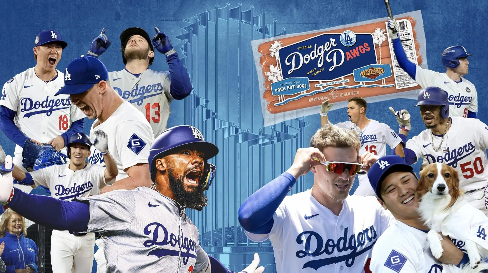
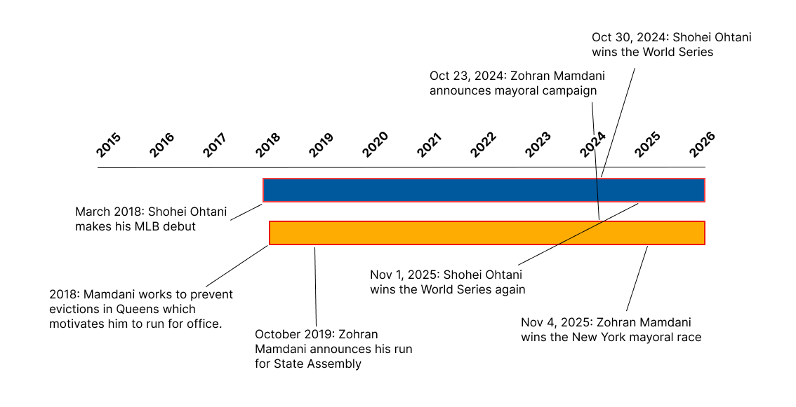
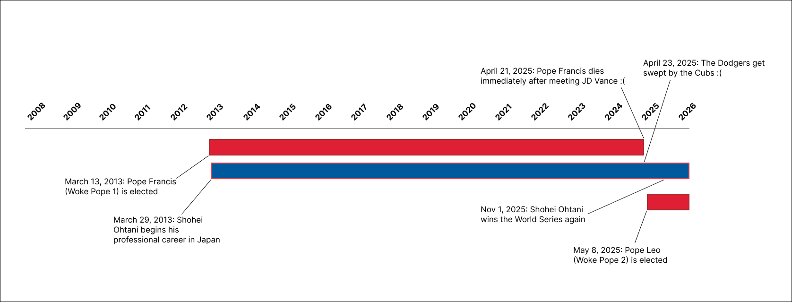

After all, what makes a team good? Is it coaching? Is the staff? Is it the talent?
I say no. It’s a secret fifth thing, and I decided that for this class, I would try to figure out what it could be.
Naturally, the first thing I turned to was music.
Albert Hammond's most famous song is "It Never Rains in Southern California" which got me wondering...while it doesn’t rain in Southern California, perhaps rainfall somewhere else is a clue here.
So I set out to test this theory by looking at average rainfall in a bunch of other countries to see if I could argue a causal relationship between any of these countries and Dodgers performance and if I'm honest, unfortunately what I found was mostly boring.
A player who is often considered one of the best baseball players to ever live.
But what is it that makes him such a good player?
It took a bit of digging around, but now I believe I've discovered the reason for his athletic superiority: he has a mutually causal relationship with woke.

